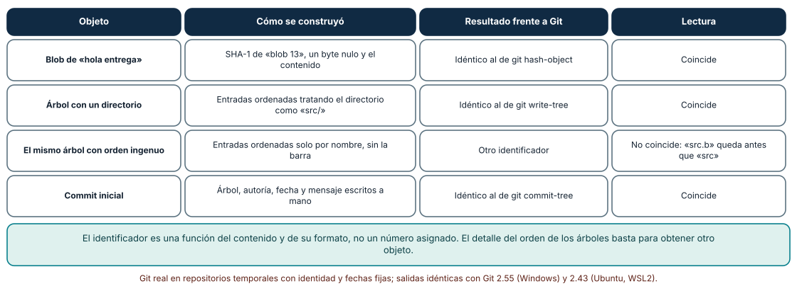
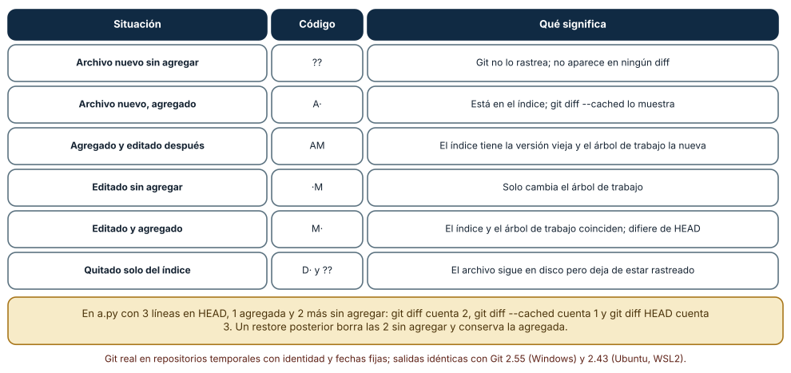
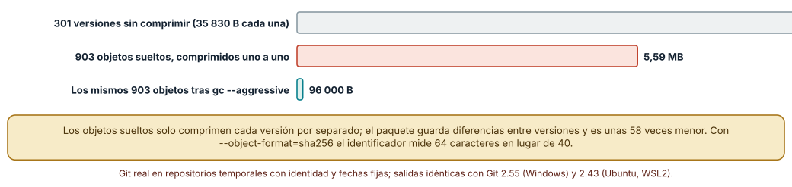

← SE-192 — Proyecto: plan adaptativo con evidencia y guardrails · ↑ Parte 16 · 📚 Índice completo · 🌐 Portal · SE-194 — Commits atómicos, historial y recuperación →
Punto profesional y fundamento pedagógico
Punto profesional. La clase existe para que una persona deje de usar Git como una lista de comandos que a veces funciona y lo use como lo que es: una base de objetos direccionada por contenido, tres áreas donde un cambio puede estar y referencias que apuntan a commits. Con ese modelo se puede predecir qué hará un comando antes de ejecutarlo y saber qué se puede recuperar después de un error.
Por qué aparece aquí. Se sitúa después de Proyecto: plan adaptativo con evidencia y guardrails y antes de Commits atómicos, historial y recuperación. La Parte 15 dejó un plan que cambia con la evidencia; ese plan vive en un repositorio y cada cambio debe poder revisarse, deshacerse y atribuirse. Esta clase construye el modelo mental sobre el que las clases siguientes razonan: sin saber qué guarda un commit no se puede decidir qué significa «atómico», qué destruye un reset ni por qué una reescritura cambia tantos identificadores.
Error conceptual que debe corregir. Creer que Git guarda diferencias entre versiones y que un commit es «el cambio». Un commit apunta a una instantánea completa del árbol; las diferencias se calculan al mostrarlas y solo el empaquetado las usa para ahorrar espacio. De ese error nacen predicciones falsas sobre renombres, duplicados y recuperación.
Secuencia de aprendizaje. Antes de leer la solución, predices el identificador de un objeto y el código de estado de un archivo; después reconstruyes a mano un blob, un árbol y un commit y los comparas con Git, recorres seis estados de un archivo entre las tres áreas y mides cuánto ocupan trescientas versiones sueltas y empaquetadas. La secuencia usa predicción, explicación propia, contraste y recuperación. ICAP distingue participación de construcción de conocimiento; How People Learn II exige conectar conocimiento previo, contexto y transferencia; la práctica de recuperación respalda producir de nuevo la explicación tras una demora; y Education for Life and Work exige devolución que explique la causa del error.
Evidencia de aprendizaje. objects-log.md con la predicción de cada identificador, la reconstrucción a mano, la tabla de estados de los archivos, la medición de espacio y una explicación de por qué renombrar un archivo no crea un blob nuevo. Debe contener predicción previa, observación, causa y qué hallazgo haría revisar el modelo.
Límite de la conclusión. Los repositorios son temporales, generados con identidad, fechas y semilla fijas; el archivo de 1 000 líneas y las trescientas ediciones de una línea son un caso favorable al empaquetado; los tamaños dependen de la versión de zlib y de Git y no se midió ningún repositorio real ni la velocidad de ninguna operación.
Trazabilidad fuente → afirmación
| Fuente primaria u oficial | Afirmación que respalda | Lo que no prueba |
|---|---|---|
| Pro Git: Git Objects | Describe blobs, árboles y commits como objetos direccionados por el hash de su contenido con una cabecera de tipo y tamaño. | No dice qué función de hash usará Git en el futuro ni cuánto ocupa un repositorio concreto. |
| git-hash-object | Calcula el identificador de un contenido con el formato del objeto, de modo que se puede comparar con el cálculo a mano. | No describe el orden de las entradas de un árbol. |
| Hash function transition | Documenta el diseño para repositorios con SHA-256 y la convivencia con SHA-1. | No afirma que un repositorio SHA-256 pueda intercambiarse hoy con cualquier alojamiento. |
Antes de empezar
Recupera lo aprendido en la Parte 15: una estimación o un plan es una afirmación que se revisa con evidencia. La pregunta activa es: ¿qué guarda exactamente Git cuando hago un commit, dónde puede estar un cambio antes de llegar ahí y qué queda si me equivoco?
Prerrequisitos
- Haber completado la Parte 15 o poder explicar cómo un plan se actualiza con evidencia.
- Python 3.11 o posterior, Git 2.40 o posterior y un terminal con acceso a ambos.
- Trabajar solo en repositorios temporales y con identidades de ejemplo; nada de lo que se hace aquí toca un remoto.
Problema auténtico
El repositorio de la plataforma de entregas tiene el módulo penal.py con la regla de penalización. Una persona renombra el archivo y se pregunta si «perdió la historia»; otra ejecuta git restore sobre un archivo con cambios a medias y descubre que solo perdió una parte; una tercera no entiende por qué el mismo archivo copiado en veinte carpetas ocupa casi lo mismo que una copia. Las tres preguntas tienen respuesta en el mismo modelo.
Objetivos observables
Al terminar podrás:
- calcular a mano el identificador de un blob, de un árbol y de un commit y verificar que coincide con el de Git;
- predecir el código de
git status --porcelainy lo que muestrangit diff,git diff --cachedygit diff HEADen cada paso; - explicar por qué dos archivos con el mismo contenido comparten un objeto y por qué un renombre no crea contenido nuevo;
- medir la diferencia entre objetos sueltos y empaquetados y declarar qué parte de la cifra depende del caso;
- decidir qué se puede recuperar tras un error según el área en la que estaba el cambio.
Mapa conceptual
Ver la notación fuente del diagrama
flowchart LR
A[Árbol de trabajo] -->|git add| B[Índice]
B -->|git commit| C[Commit]
C --> D[Árbol]
D --> E[Blob]
F[Rama] -->|apunta a| C
C -->|padre| G[Commit anterior]El mapa se lee de izquierda a derecha para el flujo de un cambio y de arriba abajo para el contenido de un commit: apunta a un árbol, que apunta a blobs y a otros árboles, y a su commit padre. Una rama es solo un nombre que apunta a un commit. No describe la velocidad ni el orden en que Git escribe los archivos en disco.
Temas y por qué importan
| Tema | Por qué cambia una decisión profesional | Evidencia mínima |
|---|---|---|
| Objetos direccionados por contenido | Explica por qué un identificador cambia con cualquier byte y por qué dos contenidos iguales comparten objeto. | Predicción, reconstrucción a mano y contraejemplo de Objetos direccionados por contenido en objects-log.md |
| Blobs, árboles y commits | Separa contenido, estructura e historia; permite entender qué cambia al renombrar o mover. | Predicción, traza causal y contraejemplo de Blobs, árboles y commits en objects-log.md |
| Las tres áreas | Decide dónde está un cambio y qué comando lo mueve, lo copia o lo destruye. | Predicción, traza causal y contraejemplo de Las tres áreas en objects-log.md |
| Referencias | Una rama o una etiqueta son nombres; mover un nombre no borra objetos, pero puede dejarlos inalcanzables. | Predicción, traza causal y contraejemplo de Referencias en objects-log.md |
| Empaquetado y funciones de hash | Explica el tamaño del repositorio y el límite de lo que el identificador garantiza. | Predicción, traza causal y contraejemplo de Empaquetado y funciones de hash en objects-log.md |
Conceptos y decisiones
1. Objetos direccionados por contenido
Git guarda cada objeto bajo el hash de su contenido precedido por una cabecera con el tipo y el tamaño. Por eso el identificador no se asigna: se calcula. Dos consecuencias prácticas: el mismo contenido en cualquier lugar del repositorio es un solo objeto, y cambiar un byte produce un identificador sin relación con el anterior. La propiedad también hace que los objetos sean inmutables: no se «edita» un commit, se crea otro, y lo que llamamos editar la historia es construir objetos nuevos y mover un nombre.
2. Blobs, árboles y commits
Un blob es el contenido de un archivo sin nombre ni permisos. Un árbol es una lista de entradas (modo, nombre, identificador) que da nombre y estructura a blobs y a otros árboles. Un commit apunta a un árbol, a cero o más padres y lleva autoría, fecha y mensaje. El nombre del archivo vive en el árbol, no en el blob: por eso un renombre cambia el árbol y deja intacto el blob. Y por eso un commit no «contiene un cambio»: contiene la instantánea completa, y el cambio es la diferencia con el padre calculada al pedirla.
3. Las tres áreas
Un cambio puede estar en el árbol de trabajo (archivos en disco), en el índice (la instantánea que se prepara para el próximo commit) o en HEAD (el último commit). git add copia del árbol de trabajo al índice, git commit convierte el índice en un commit, git restore sobrescribe el árbol de trabajo desde el índice y git restore --staged sobrescribe el índice desde HEAD. El código de dos letras de git status --porcelain es una comparación por pares: la primera letra es índice contra HEAD y la segunda árbol de trabajo contra índice. Saber en qué área está un cambio es saber qué comando puede perderlo.
4. Referencias
Una rama, una etiqueta y HEAD son archivos pequeños con un identificador (o con el nombre de otra referencia). Mover una rama no borra objetos: solo cambia a qué commit se llega desde ese nombre. Un objeto queda a salvo mientras sea alcanzable desde alguna referencia o desde el registro de movimientos (reflog); si deja de serlo, es candidato a la poda. Esta distinción entre «existe» y «es alcanzable» es la base de toda la recuperación de SE-194.
5. Empaquetado y funciones de hash
Los objetos recién creados se guardan sueltos, comprimidos uno a uno. Con git gc (o al transferir) Git los reúne en un paquete y almacena versiones parecidas como diferencias entre sí, de ahí que muchas versiones de un archivo ocupen poco más que una. El identificador de 40 caracteres es el SHA-1 del objeto; Git tiene un diseño de transición hacia SHA-256 con identificadores de 64 caracteres. Que dos contenidos distintos produzcan el mismo identificador es un fallo de la función de hash, no de Git; la propiedad que se usa en la práctica es que el identificador detecta cualquier alteración accidental del historial.
Reconstruir los identificadores a mano
Un blob es b"blob " + longitud + b"\0" + contenido pasado por SHA-1. Un árbol es la concatenación de modo + b" " + nombre + b"\0" + el identificador binario de 20 bytes de cada entrada, ordenadas por nombre tratando los directorios como si su nombre terminara en /. Un commit es un texto con las líneas tree, parent, author, committer, una línea en blanco y el mensaje. Con un blob «hola entrega», un árbol con un directorio src/, dos archivos y un commit con autoría y fecha fijas, el cálculo a mano coincidió con el de Git en los tres objetos. Con el orden ingenuo (por nombre, sin la barra) el árbol tuvo otro identificador: src.b va antes de src/ solo si el directorio se ordena como src/. En un repositorio de prueba con 200 archivos que repetían 20 contenidos, Git guardó 20 blobs, 11 árboles y 1 commit, y renombrar un archivo con git mv conservó el mismo blob.
import hashlib
datos = b"hola entrega\n"
print(hashlib.sha1(b"blob %d\0" % len(datos) + datos).hexdigest()[:12]) # 1b4e1e83facf
Cómo leer la figura. Cada fila es un objeto construido con hashlib sin llamar a Git; la tercera columna dice si el identificador coincidió con el de Git. Dónde deja de valer: el cálculo vale para repositorios con SHA-1 y objetos sin compresión especial; un repositorio SHA-256 usa otro hash y otro tamaño de identificador, y los objetos con firma o con extensiones añaden cabeceras que el ejemplo no incluye.
Dónde está un cambio
Sobre un repositorio con a.py de tres líneas se recorrieron seis situaciones. Un archivo nuevo sin agregar aparece como ??; agregado, como A·; agregado y luego editado, como AM (el índice tiene la versión vieja y el árbol de trabajo la nueva); un archivo editado sin agregar, como ·M; editado y agregado, como M·; y quitado solo del índice con git rm --cached, como D· más un ?? porque el archivo sigue en disco. Con a.py de 3 líneas en HEAD, 1 línea agregada y 2 líneas más sin agregar, git diff cuenta 2, git diff --cached cuenta 1 y git diff HEAD cuenta 3. Un git restore a.py posterior dejó el archivo con las 4 líneas: borró las 2 sin agregar y conservó la agregada.

Cómo leer la figura. El código tiene dos letras: la primera compara el índice con HEAD y la segunda el árbol de trabajo con el índice; el punto reemplaza al espacio que imprime Git. Dónde deja de valer: la tabla describe archivos de texto sin conflictos, sin submódulos y sin assume-unchanged; durante una fusión conflictiva aparecen otros códigos (como UU) y el índice contiene tres versiones del mismo archivo.
Sueltos frente a empaquetados
Un archivo de 1 000 líneas (35 830 bytes) recibió 300 ediciones de una línea, cada una confirmada. El repositorio acumuló 903 objetos (301 blobs, 301 árboles, 301 commits) que ocupaban 5 588 961 bytes como archivos sueltos, frente a 10 784 830 bytes que sumarían las 301 versiones sin comprimir. Tras git gc --aggressive --prune=now, el paquete ocupó 96 000 bytes: unas 58 veces menos que los sueltos. Los números fueron idénticos con Git 2.55 en Windows y 2.43 en Ubuntu. Un repositorio creado con --object-format=sha256 dio identificadores de 64 caracteres para el mismo contenido (7c4ec9179e…) frente a los 40 de SHA-1 (5c1b149498…).

Cómo leer la figura. La barra gris es lo que ocuparían las versiones sin comprimir, la coral los objetos sueltos y la verde el paquete; cada barra usa la misma escala en megabytes. Dónde deja de valer: editar una línea de 1 000 es el mejor caso para los deltas. Un archivo binario que cambia por completo, o cientos de archivos distintos, comprimen mucho menos; y el espacio en disco real redondea cada archivo suelto a bloques del sistema de archivos, de modo que 903 archivos pequeños ocupan más de lo que suman sus bytes.
Definiciones de trabajo
- objeto: unidad inmutable de la base de Git (blob, árbol, commit o etiqueta anotada) identificada por el hash de su contenido.
- blob: contenido de un archivo, sin nombre ni permisos.
- árbol: lista de entradas con modo, nombre e identificador que da estructura a blobs y a otros árboles.
- índice: instantánea que se prepara para el próximo commit; vive entre el árbol de trabajo y HEAD.
- referencia: nombre (rama, etiqueta, HEAD) que apunta a un commit o a otra referencia.
Las definiciones son operativas para la plataforma de entregas. No convierten términos con historia más amplia en sinónimos y deben contrastarse con la documentación primaria enlazada al final.
Ejemplo mínimo
El fragmento crea un repositorio temporal, guarda dos archivos con el mismo contenido y cuenta los blobs. Antes de ejecutarlo, predice cuántos objetos de cada tipo habrá.
git init -q demo && cd demo
printf 'hola entrega\n' > a.txt && cp a.txt b.txt
git add . && git -c user.name=Ejemplo -c user.email=ejemplo@example.invalid commit -q -m base
git cat-file --batch-all-objects --batch-checkDebe haber un blob (los dos archivos lo comparten), un árbol y un commit. Registra versión de Git y salida, y repite con git mv a.txt c.txt para comprobar que el blob no cambia.
Ejemplo profesional
En el repositorio de la plataforma, el módulo penal.py se renombra a reglas/penalizacion.py en un commit que no cambia su contenido. La revisión muestra el renombre porque Git compara dos árboles y detecta que un blob desapareció de una ruta y apareció idéntico en otra. Una persona que quiere recuperar una versión anterior del archivo no necesita «deshacer el renombre»: pide el blob de ese commit con git show <commit>:ruta o restaura la ruta antigua desde ese árbol.
Compara el caso con un archivo reformateado completo: el blob cambia, el renombre ya no se detecta por identidad sino por similitud, y la revisión de SE-196 verá un archivo borrado y otro añadido si la similitud cae bajo el umbral. Una práctica es apropiada cuando separa el renombre del reformateo en commits distintos; es peligrosa cuando los mezcla en uno.
Práctica guiada
- Calcula con
hashlibel identificador del blob de un archivo de tu repositorio de prueba y predice si coincidirá congit hash-object. - Construye a mano un árbol con un directorio y dos archivos y compara con
git write-tree; cambia el orden de las entradas y registra qué ocurre. - Escribe un commit a mano con autoría y fecha fijas y compáralo con
git commit-tree. - Lleva un archivo por los seis estados de la figura y registra el código de
statusantes de mirar la salida. - Con un archivo agregado y editado, predice cuántas líneas contará cada variante de
git diffy comprueba. - Crea 300 ediciones de una línea, mide el espacio de los sueltos y del paquete tras
git gcy anota la versión de Git. - Pide a otra persona que reconstruya tu conclusión solo desde
objects-log.mdy registra qué dato le faltó.
Ejercicios
- Etiqueta anotada: calcula a mano el identificador de una etiqueta anotada y explica en qué se diferencia de un commit.
- Directorio vacío: predice si Git puede guardar un directorio sin archivos y comprueba el resultado; explica qué dice sobre el modelo de árboles.
- Mismo contenido, distinto modo: cambia el permiso de ejecución de un archivo y determina qué objeto cambia y cuál no.
- Límite del empaquetado: repite la medición de espacio con un archivo binario aleatorio de 35 830 bytes que cambia por completo y compara la razón con la del archivo de texto.
Reto verificable
Entrega objects-log.md con la reconstrucción de un blob, un árbol y un commit, la tabla de estados de los archivos, la medición de espacio con la versión de Git y una explicación del renombre. Se aprueba si otra persona ejecuta los comandos desde un directorio vacío, obtiene los mismos identificadores y puede decir qué parte de tu explicación dependió del caso favorable. No se aprueba por memorizar los nombres de los comandos.
Caso conductor
El repositorio de la plataforma de entregas es el caso conductor de la Parte 16. Esta clase deja el modelo de objetos y de áreas con el que las siguientes razonan: SE-194 pregunta cuándo un cambio es lo bastante pequeño para ser un commit y qué se recupera tras un error, y SE-195 trata las ramas como nombres que se mueven. Cambia después un solo dato, el modo de un archivo, y revisa qué objetos cambian y qué commit lo mostraría.
Preguntas frecuentes
¿Git guarda diferencias o copias completas?
Conceptualmente, instantáneas completas: cada commit apunta a un árbol entero. El empaquetado usa diferencias entre objetos parecidos para ahorrar espacio, pero eso es un detalle de almacenamiento que no cambia lo que Git muestra.
¿Por qué git status muestra a veces dos letras?
Porque compara dos pares: la primera letra es el índice frente a HEAD y la segunda el árbol de trabajo frente al índice. AM significa agregado y modificado después de agregarlo.
¿Un commit puede cambiar después de creado?
No: un cambio en su contenido produce otro identificador. Lo que se llama «editar un commit» crea un commit nuevo y mueve una referencia; el viejo sigue en la base hasta que nada lo alcanza y se poda.
¿Se puede perder un archivo que nunca se agregó?
Sí: si un archivo no rastreado se borra con git clean o un cambio sin agregar se sobrescribe con git restore, Git nunca lo guardó y no puede recuperarlo. Es la primera lección de SE-194.
Fallo controlado y diagnóstico
Reproduce el fallo clásico de la clase: creer que el nombre del archivo es parte del contenido. Usa el renombre de penal.py.
Registra síntoma, entrada mínima, hipótesis, observación que descarta cada hipótesis, causa, corrección y prueba de regresión. Síntoma: tras renombrar el archivo, una persona afirma que «Git perdió la historia» porque git log -- reglas/penalizacion.py solo muestra los commits desde el renombre. Hipótesis rivales: (a) el renombre rompió el historial; (b) git log con una ruta filtra por esa ruta y los commits anteriores usaban otra. Prueba: git cat-file --batch-all-objects --batch-check muestra el mismo número de blobs antes y después, y git log --follow reglas/penalizacion.py recorre los commits anteriores. Conclusión: el contenido y el historial siguen; lo que cambió es el nombre en el árbol y el filtro de ruta. Regresión: añade al registro la regla «para seguir un archivo renombrado, usar --follow o pedir el blob por identificador» y una prueba que cuente blobs antes y después. No cambies a la vez el renombre y el contenido.
Errores comunes y cómo corregirlos
| Síntoma | Causa probable | Corrección |
|---|---|---|
Se pierde trabajo tras git restore | El cambio estaba solo en el árbol de trabajo | Agregar o confirmar antes de ejecutar comandos que sobrescriben |
git diff aparece vacío pese a haber cambios | Los cambios ya están en el índice | Usar git diff --cached o git diff HEAD |
| Se cree que dos copias de un archivo ocupan el doble | Se supone que se guardan copias, no objetos por contenido | Contar objetos con git cat-file --batch-all-objects --batch-check |
| El repositorio crece más de lo esperado | Archivos binarios que cambian por completo no se comprimen como deltas | Medir antes y excluir artefactos generados del control de versiones |
| Se confía en el identificador para probar autoría | El hash detecta alteración, no quién lo escribió | Combinar con firmas, tema de SE-202 |
Entorno y archivos clave
work/SE-193/
├── README.md
├── objetos/
│ ├── reconstruir.py
│ ├── areas.py
│ └── almacen.py
└── evidence/objects-log.mdEl README declara sistema operativo, versión de Git y de Python, semillas y comandos. Los experimentos usan hashlib, subprocess y repositorios temporales con identidad y fechas fijas y se ejecutaron con CPython 3.12.9 y Git 2.55 en Windows 11 y con CPython 3.12.3 y Git 2.43 en Ubuntu bajo WSL2: las salidas fueron idénticas. Si automatizas con otra biblioteca, fija procedencia y versión.
Seguridad, ética y accesibilidad
- un objeto confirmado, aunque se borre después, puede seguir en la base y en otros clones: nunca confirmes secretos esperando «deshacerlo»;
- el identificador de un commit no es una firma ni una prueba de autoría: no lo presentes como tal;
- no uses identidades reales en repositorios de práctica; los experimentos usan direcciones
example.invalid; - ofrece una alternativa textual a las tablas de estados y describe los códigos de dos letras en palabras;
- respeta las licencias de los archivos que copies a los repositorios de práctica.
Puente hacia el trabajo con agentes
Un agente al que se le pide «deshaz el último cambio» suele elegir git reset --hard o git checkout . sin preguntar en qué área estaba el cambio. Pídele que primero ejecute git status --porcelain=v1 y explique qué contiene cada área, que diga qué comando destruiría información no confirmada y que proponga una copia previa con git stash o una rama. Revisa especialmente cualquier comando que sobrescriba el árbol de trabajo: si el cambio nunca se agregó, no hay recuperación.
Transferencia
Traslada el modelo a otro sistema con almacenamiento por contenido (por ejemplo, un caché de compilación por hash de entradas o un registro de imágenes de contenedor): identifica qué es el equivalente del blob, del árbol y de la referencia y qué ocurre cuando dos entradas iguales llegan por caminos distintos. La transferencia está lograda cuando puedes explicar qué parte del modelo dependía de Git y cuál no, no cuando los nombres se parecen.
Evaluación y evidencia
| Criterio | Evidencia para aprobar |
|---|---|
| comprensión | explicación de qué guarda un commit y de dónde sale su identificador |
| corrección | identificadores reconstruidos a mano que coinciden con Git |
| diseño | tabla de áreas que predice el código de status y los tres diff |
| diagnóstico | reproducción del fallo «el nombre es parte del contenido» con regresión |
| incertidumbre | declaración de qué parte de la medición de espacio depende del caso favorable |
| reproducibilidad | versiones, comandos, salida y límites declarados |
Fuentes
- Pro Git: Git Objects — formato de blobs, árboles y commits; autoridad: Pro Git.
- git-hash-object — cálculo del identificador de un contenido; autoridad: documentación de Git.
- git-status — formato corto y significado de los códigos de dos letras; autoridad: documentación de Git.
- git-gc — recolección de objetos y empaquetado; autoridad: documentación de Git.
- Pro Git: Packfiles — almacenamiento con deltas; autoridad: Pro Git.
- Hash function transition — diseño de la transición a SHA-256; autoridad: documentación de Git.
Cada fuente respalda el mecanismo indicado; ninguna demuestra cuánto espacio ocupará un repositorio concreto ni que el modelo de la plataforma de entregas sea el adecuado para otro proyecto.
- git-cat-file — inspección de objetos usada en los experimentos.
- git-count-objects — recuento de objetos sueltos y empaquetados.
Límites y siguiente paso
Se ejecutaron tres experimentos con repositorios temporales y datos sintéticos en Windows y Ubuntu (WSL2) con resultados idénticos. No se usó ningún repositorio real, el archivo de 1 000 líneas con ediciones de una línea es un caso favorable al empaquetado y no se midió el rendimiento de ninguna operación. La siguiente clase pregunta qué tamaño y qué forma debe tener un commit para que el historial sea útil y qué se puede recuperar cuando algo sale mal.
Glosario
- objeto: unidad inmutable de la base de Git (blob, árbol, commit o etiqueta anotada) identificada por el hash de su contenido.
- blob: contenido de un archivo, sin nombre ni permisos.
- árbol: lista de entradas con modo, nombre e identificador que da estructura a blobs y a otros árboles.
- índice: instantánea que se prepara para el próximo commit; vive entre el árbol de trabajo y HEAD.
- referencia: nombre (rama, etiqueta, HEAD) que apunta a un commit o a otra referencia.
← SE-192 — Proyecto: plan adaptativo con evidencia y guardrails · ↑ Parte 16 · 📚 Índice completo · 🌐 Portal · SE-194 — Commits atómicos, historial y recuperación →